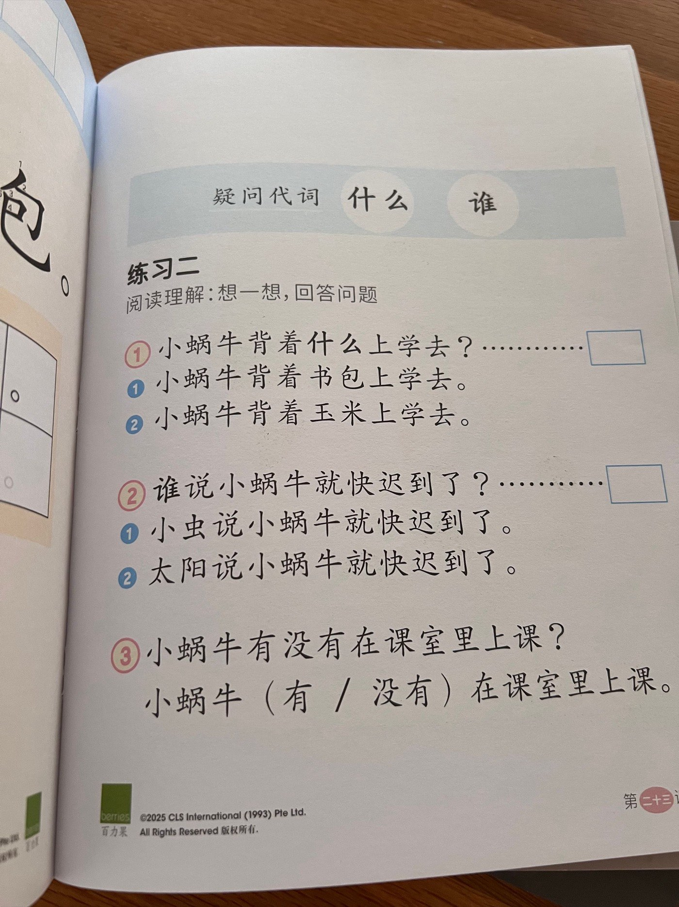
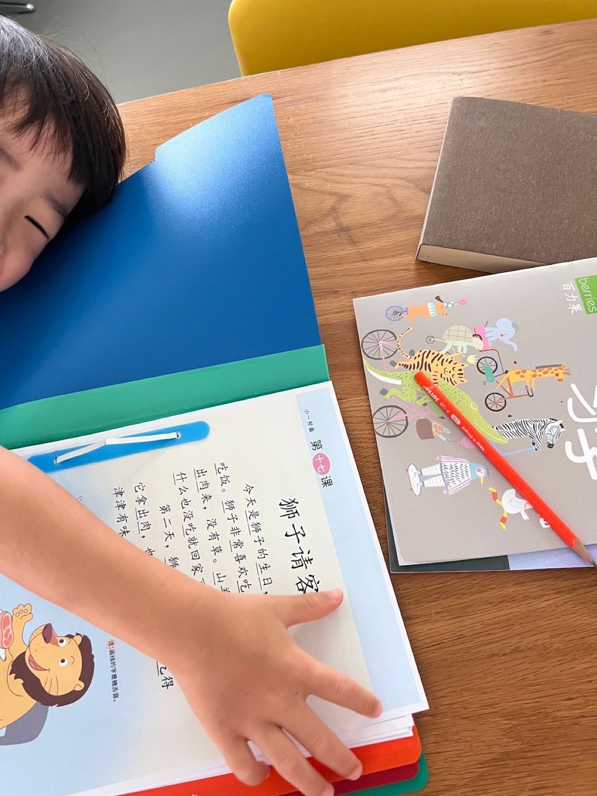
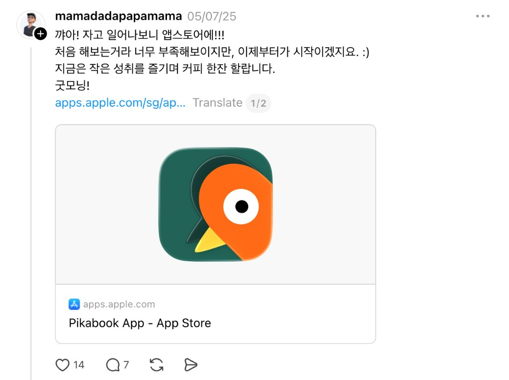

An iOS app that helps non-Chinese-native parents and students study their
books — turning printed pages into AI-powered interactive learning
material they can understand, hear, and practice.
Pikabook takes book pages beyond the printed page. From a photo of a book
page or a school handout, it generates line-by-line explanations, pinyin,
audio clips, and flashcards for the words you don’t understand. And for the
sentences you want to practice further, it offers pronunciation assessment.

what preschoolers are assigned as homework

obviously, my son hates doing it
The spark
From a parent’s frustration
Pikabook started from my own experience in Singapore. My son would bring home
Chinese printouts, and I often could not understand them well enough to help.
I could take a photo, ask GPT, or look things up manually — but the experience
was fragmented. I needed pinyin, translation, pronunciation, audio, and a way
to save useful content in one flow.
And it turned out it wasn’t only my problem. When I
surveyed
and interviewed other parents in the same situation, the picture was the same:
the current experience is fragmented — a dictionary app here, a translation
app there — and no single solution covers the whole flow.
The bet: AI could help — but only if wrapped in a useful workflow. The value was
not “OCR plus translation.” It was moving from “I don’t understand this page” to
“I can help my child read, hear, save, and practice it.”
Not OCR plus translation — a complete learning workflow.
I designed the product, defined requirements, prioritized the roadmap, and used
AI coding tools to build and release the first version — before today’s coding
agents became mainstream. That required constant product judgment: breaking features
down, checking implementation quality, enforcing structure, and repeatedly cleaning
up architecture around state management, caching, and feature boundaries.
I kept an unfiltered build log on
Threads ↗
while building and refactoring — the raw feelings behind this process. The morning
Pikabook went live on the App Store, I woke up to the listing and posted in pure
excitement. It was my first time shipping an app to a marketplace. It still felt
unfinished — but it was real, and for a moment I just wanted to enjoy the small
win with a cup of coffee.

Later I collaborated with a developer to improve the product further. With today’s
AI models, almost everything feels possible at this product’s scale. Back then,
though, I hit a wall that endless refactoring and reading the codebase with limited
engineering knowledge couldn’t fix: subscriptions. My business model uses a
usage-based trial after subscription — and I couldn’t tell where it was breaking.
So I hired a developer to review the code from the ground up. That collaboration
clarified what AI-assisted building still needs from experienced engineers:
architecture, reliability, and production-level judgment — not screen-by-screen
implementation.
What I built
01Smart notes from a photo — line-by-line explanations with pinyin, translation, and AI voice playback
02Tap-to-look-up dictionary and flashcards built from the words you don’t know
03Pronunciation assessment on the sentences you want to practice further
04Product direction, UX design, roadmap, release decisions, and developer handoff
What I learned
Pikabook is where I moved from product designer to product builder: finding the use
case, defining the workflow, using AI to ship quickly, collaborating with developers
where it matters, and deciding what the first version should and should not be.
That shift meant wearing the product manager / product owner hat far more than before.
I spent more time in Cursor and Notion —
roadmapping,
writing the wiki,
tracking bugs, documenting use cases for myself and the developer — than in Figma. Toward the end,
I almost never opened Figma at all.
The harder lesson: customer reach matters more than I wanted to admit. A strong product
means little if it never reaches the people who need it. Right after launch, fast
marketing matters — and in Singapore, that was harder than expected. Sharing in
Facebook groups and local social communities often got treated as advertising; after
a few rejections and removals, I grew discouraged and under-promoted Pikabook.
Losing that early momentum is still what I regret most.